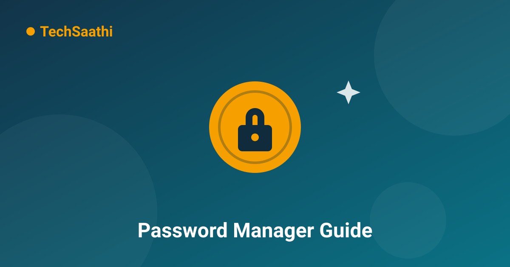

Stop Reusing Passwords: The Beginner's Guide to Password Managers

Be honest — you have three or four passwords, and you use them everywhere. Email, shopping, food delivery, social media: same password, different sites. You are in enormous company, and attackers know it. When any one of those sites gets hacked, criminals take the leaked email-and-password pair and try it on Gmail, Facebook, bank portals and payment apps. This automated attack is called credential stuffing, and it works precisely because almost everyone reuses passwords. A password manager breaks this cycle — and it is far easier to use than you think.
What Is a Password Manager?
A password manager is a secure digital locker for your login details. You remember exactly one strong master password; the manager remembers the rest — a unique, random password for every single account. When you open a website, it fills in the credentials automatically. Behind the scenes, your vault is encrypted with your master password using the same mathematics that protects banking traffic, so even the company running the manager cannot read your passwords. This design is called zero-knowledge encryption, and it is the reason the good ones are trustworthy.
Why Not Just Write Passwords in a Notebook?
A notebook is actually not the worst idea — it cannot be hacked from the internet. But it fails in daily life: you cannot copy-paste from it, it is useless on your phone when you are out, one curious guest or thief sees everything, and a spilled cup of chai ends the archive. A password manager gives you the notebook's simplicity with encryption, search, auto-fill and secure backup built in.
How to Start in 15 Minutes
Here is the beginner path, step by step:
- Step 1 — Choose one. Reputable options include Bitwarden (open source, generous free tier), 1Password (paid, very polished), Proton Pass, and the password manager already inside Google or Apple accounts. For most beginners, the built-in Google/Apple manager or Bitwarden's free plan is more than enough.
- Step 2 — Create the master password. This is the one password you must remember, so make it long and memorable: a phrase of 4–5 unrelated words works brilliantly ("mango-train-marble-radio"). Never reuse it anywhere else.
- Step 3 — Turn on two-factor authentication for the manager itself. Now even a stolen master password is not enough to open your vault.
- Step 4 — Let it fix your old passwords. Every manager has a "security checkup" that flags weak and repeated passwords. Change the important ones first — email, banking, shopping — and let the manager generate 16-character random replacements.
- Step 5 — Add accounts as you go. You do not need to migrate everything in one evening. Each time you log in somewhere new, save it to the vault. Within two weeks most of your digital life will be inside.
But What If I Forget My Master Password?
This is the fear that keeps people on "password123" — and it is a fair one. With zero-knowledge managers, a forgotten master password cannot be recovered by the company; that is the price of real security. So plan ahead: most managers offer a recovery kit, a printable emergency sheet, or a trusted-contact unlock. Write the recovery instructions down and store them physically somewhere safe — a drawer, not a sticky note on the monitor.
The Bonus You Did Not Expect
Once your vault is running, you get free superpowers: it warns you when a website you use has been breached, fills your addresses and card details into forms instantly (locally, on your device), and stops phishing far better than you can — because auto-fill only offers your password on the genuine website. A fake lookalike site gets nothing, because your manager has never seen that web address before. You literally cannot be tricked into typing your password into a clone.
Conclusion
Password reuse is the quiet reason so many accounts get "hacked" without any hacking at all. One strong master password, a reputable manager, two-factor authentication — fifteen minutes of setup today removes the single biggest hole in your digital life. Your future self, and your money, will be glad.
Frequently Asked Questions (FAQ)
Is it dangerous to keep ALL my passwords in ONE place?
It feels risky, but it is the opposite: one encrypted vault protected by a strong master password and 2FA is far safer than the same passwords scattered across ten websites with weak locks. The vault only needs guarding once — and good managers make that easy.
Are browser password managers (Chrome/Google, Apple) good enough?
For most people, yes — they encrypt your passwords, sync across devices, and auto-fill reliably. Dedicated apps like Bitwarden add features such as security audits, shared vaults and cross-brand independence. Start with the browser's manager if that feels simplest; graduating later takes minutes.
What makes a master password strong?
Length beats complexity. A five-word phrase you can remember ("blue-tiger-rickshaw-monsoon-tea") is far stronger than "P@ssw0rd99" and easier to recall. Add a number or personal twist if you like, never reuse it, and protect it with 2FA.
One vault, one master password, zero reused passwords — that is the goal! 🔐